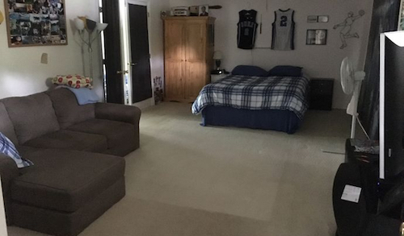
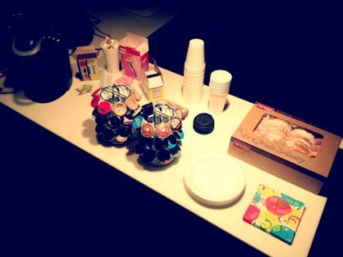
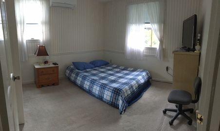
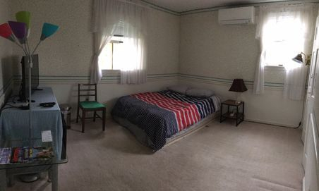

Main Floor
We also rent out 3 rooms on our main and 2nd floor. The room on the main floor sleeps up to five (5) people. 1 ½ bathroom access.
Amenities include:
- 50" Cable TV
- Wifi
- Couch
- Heat/AC
- Fridge
You are welcome to use our full kitchen and family room. We provide coffee and donuts during your stay.


Upstairs
The two rooms on the 2nd floor sleeps up to three (3) people each. 1 ½ bathroom access.
Amenities include:
- 40" Cable TV
- Wifi
- Fridge (only in 1 of the 2 rooms)
- Heat/AC

